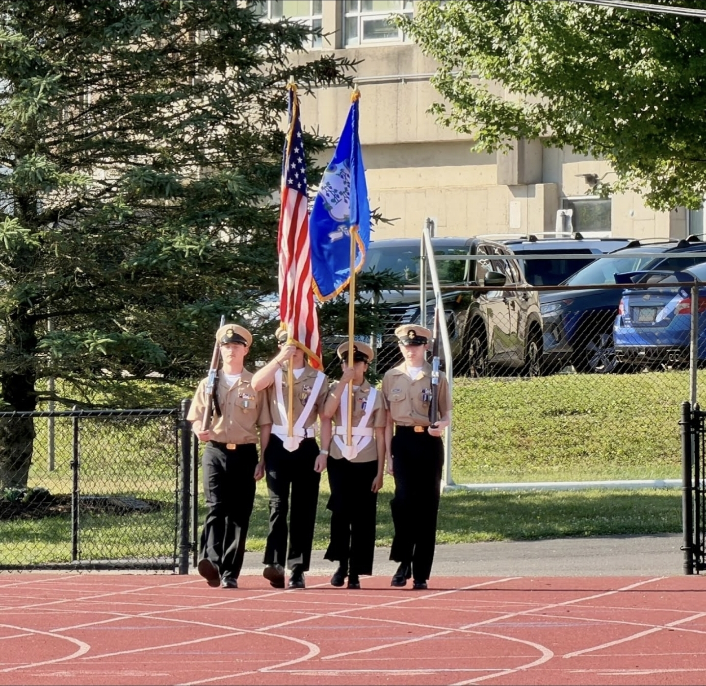

Drill & Ceremony / Color Guard
Color Guard
Present national and organizational colors with ceremonial dignity.

Learning focus
Cadets rehearse coordinated commands, measured steps, and respectful color handling for authorized ceremonies.
- Command response
- Ceremonial bearing
- Formation spacing
Movements and equipment use require governing-guidance review and Naval Science Instructor approval before publication or practice.